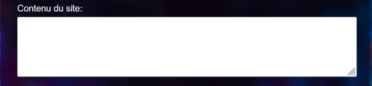
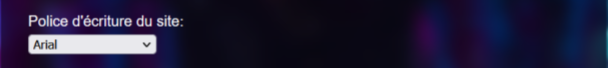
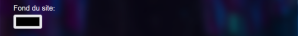
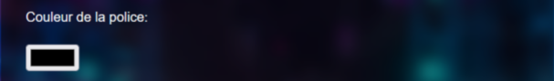
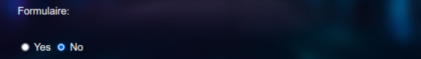
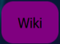

Comment on l'utilise ?
Tout d'abord pour lancer le projet : il faut installer Xampp control panel. Démarrer xampp control panel(start apache et mysql). Cloner le repository dans le dossier htdocs du dossier Xampp (le dossier xampp se crée automatiquement après l'installation de xampp). lancer le lien "localhost/Hack/HACKATHON/Wiki/html/wiki1.html" dans le navigateur et tout est bon ! L'utilisation de notre site GénéraSitee est assez simple et intuitive ! Voici étape par étape le guide d'utilisation du générateur.
Vous pouvez inscrire à l'intérieur de cette case le titre du site que vous souhaitez générer.
Ici, il est possible de rédiger le contenu que vous souhaitez ajouter à votre futur site web.
Le choix de la police d'écriture est disponible en cliquant sur le menu défilant.
Il est possible de personnaliser la couleur du fond du site en sélectionnant une couleur.
La couleur de la police peut elle aussi être modifié à la guise de l'utilisateur, il suffit simplement de sélectionner la couleur de son choix.
Un ou plusieurs boutons intégrant un lien peuvent être créé, pour cela, il est nécessaire de cocher la case oui ou non en fonction de ce que l'utilisateur souhaite.
Un formulaire peut lui aussi être généré pour cela, comme pour la création des boutons, il suffit de sélectionner oui ou non en fonction de son envie.
Le bouton Générate permet de générer les choix effectuer par l'utilisateur !
Wiki permet d'accéder au wiki où vous vous trouvez actuellement